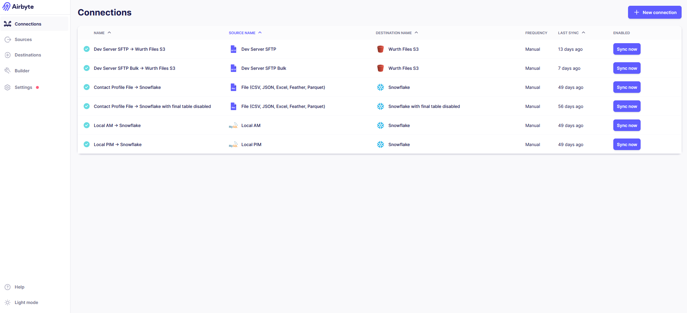
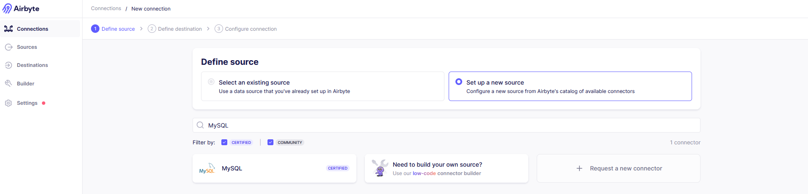
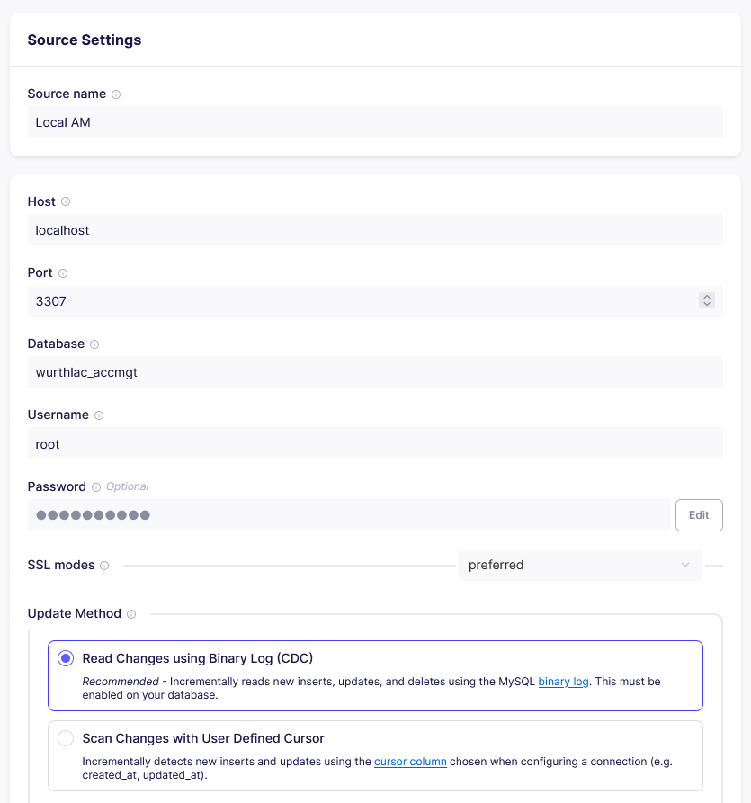
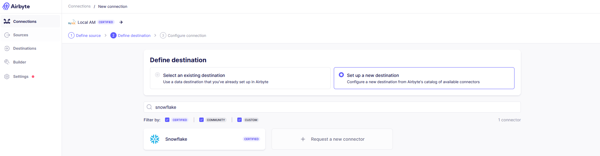
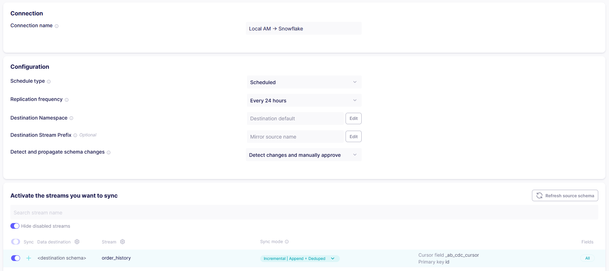

Effortless Data Migration: Moving Data from MySQL to Snowflake using Airbyte
This article explains on how data can be moved from a MySQL database to Snowflake via Airbyte.

Data is migrated from one system to another using data pipelines. Data pipeline is a way for moving data from a source to a destination while transforming it. Imagine, you want to move data from MySQL to Snowflake, then MySQL is the source and Snowflake is the destination. In Snowflake, raw data from the pipeline is loaded into a staging table and then inserted into a final table. This final table would be the destination of the pipeline.
Advantages of using Modern Data pipelines for migrating data
- Automate the full migration workflow including loading raw data into a staging table and then inserting it into the destination reporting tables.
- Handle migration of large volumes of data (scalable)
- Transform data to various formats, structures and values
- Run data quality checks and validations
- Monitor and track the migration process
- Handle errors during migration
- Reuse transformation in other data pipelines
Understanding the Components
- MySQL
MySQL is an open-source relational database management system (RDBMS) that is commonly used for Online Transaction Processing (OLTP).
OLTP databases are designed to handle a large volume of transactions with concurrency control. Transactions are operations that modify data, such as INSERT, UPDATE, or DELETE statements.
CDC is a method of extracting data from a database. CDC works by reading changes
using the MySQL Binary Log. To enable Binary Log in MySQL, you must add the
following lines under [mysqld] section to the MySQL config file, usually located
at /etc/my.cnf or /etc/my.cnf.d/server.cnf or
/etc/mysql/my.cnf or
/etc/mysql.cnf:
binlog_do_db=wurth_live
log-bin=/var/lib/mysqllogs/1-db1-binary-log
binlog-format=ROW
server-id=1
After making the above change, remember to restart the MySQL server as: sudo service mysql restart
Snowflake is a cloud data platform designed for OLAP workloads. It is used to store, process and analyze large volumes of data. It uses SQL for querying data.
Reasons for migrating data from OLTP databases to OLAP databases:
- To generate reports to support in business planning
- To improve performance when executing complex queries
- To aggregate and summarize the transactional data across various dimensions to support in analysis
- To develop decision support systems that enable decision makers who can use interactive tools for exploring data
- To analyze historical data and gain insights for forecasting and trend analysis
Airbyte is an integration platform designed to build data pipelines and replicate data from a source to a destination. Using Airbyte, you have control over how often your data syncs, what specific data gets replicated, and the way it's stored in the destination. It's all about simplifying the task of moving and organizing data, especially for analytics and business insights.
How to setup a new Connection between a MySQL source and Snowflake destination in Airbyte?
You can follow the following steps to create a new connection in airbyte
-
Select the ‘Connections’ Menu in the left side of the window and click on the ‘+ New connection’ button.
This will take you to the ‘Define Source’ step.
-
In the ‘Define Source’ step, select the option to ‘Set up a new source’ and select MySQL from the list of source connectors.
 -
Configure the MySQL source connector by entering the host, port, username, password and the name of the database. Remember to select ‘Read Changes using Binary Log (CDC)’ as the Update Method (i.e. the data extraction method from the database)
After configuring the source connector, click on 'Set up source' button. This will take you to the ‘Define Destination’ step.
-
In the ‘Define Destination’ step, select the option to ‘Set up a new Destination’ and select Snowflake from the list of destination connectors.
 -
Configure the Snowflake destination connector by entering the host, database, schema, username, authorization method, role and warehouse.

Configure the Snowflake destination connector by entering the host, database, schema, username, authorization method, role and warehouse.
-
In the ‘Define Connection’ step, Airbyte will fetch the schema of the data source. If the schema fetch is successful, you can configure the connection by entering a name for the connection and selecting the schedule type (i.e. how the sync for this connection needs to be carried out – scheduled, manual or cron). You must also select the tables that need to be replicated and you must select the sync modes that must be used for each table for replication. (More details on the sync modes are given later in this article).
After configuring the connection, click on 'Set up connection' button. This will successfully create an airbyte connection that is capable of replicating data from the MySQL source to the Snowflake destination.
Limitations
- Large Data Sync Limitations
- Connectivity Restrictions
Syncing data from a MySQL source to a Snowflake destination using Airbyte could lead to failures during the sync process due to various factors such as network speeds and system performance. The amount of data being transferred over the network, coupled with the processing power required by both the source and destination systems, can strain resources and potentially result in timeouts or failures. It's crucial to consider optimizing network infrastructure, increasing system resources, or implementing data partitioning strategies to mitigate these limitations and ensure successful data synchronization.
In some cases, Airbyte may not be directly allowed to establish connections to the MySQL source due to regional or organizational restrictions. These restrictions could be enforced by network firewalls, security policies, or access controls implemented by the organization hosting the MySQL database. To overcome this limitation, it may be necessary to work closely with network administrators or IT security teams to whitelist Airbyte's IP addresses, configure VPN access, or explore alternative connectivity options such as SSH tunneling, or deploying Airbyte within the same network environment as the MySQL source or export tables from the MySQL source into files, which can then be transferred to the Snowflake destination for synchronization. By addressing these connectivity restrictions, organizations can ensure seamless data flow between MySQL and Snowflake through Airbyte while maintaining compliance with security policies and regulations.
Appendix
- Sync modes
- Incremental Append + Deduped: Read latest data from the source (since the last sync job) and append data to existing tables in the destination, also removes data duplicates based on a primary key
- Full Refresh Overwrite: Read all data from the source and overwrite data to the destination by first deleting existing data in the destination
- Full Refresh Append: Read all data from the source and append data to existing tables in the destination
- Incremental Append: Read latest data from the source (since the last sync job) and append data to existing tables in the destination
Sync modes are the different ways in which airbyte will read from a source and write to a destination. The following are the sync modes that are supported in airbyte: